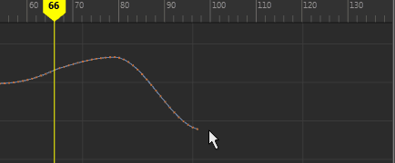

交互式缩放曲线
- 在“曲线图编辑器”(Graph Editor)工具栏中，选择“区域工具”(Region Tool)
 并拖动以选择要缩放的曲线区域。
并拖动以选择要缩放的曲线区域。
将在曲线周围显示一个矩形选择框，而且每侧都有一个操纵器控制柄。
- 拖动整个选定框以移动整个区域，或拖动框的每侧上的控制柄以按下面的方式展开和收拢框：
- 水平拖动，以便随着时间的推移缩短或延长区域。
- 垂直拖动，以便增加或减小区域中值的范围。
默认情况下，关键帧会捕捉到时间和值的整个值。
交互式缩放曲线
并拖动以选择要缩放的曲线区域。
将在曲线周围显示一个矩形选择框，而且每侧都有一个操纵器控制柄。
默认情况下，关键帧会捕捉到时间和值的整个值。